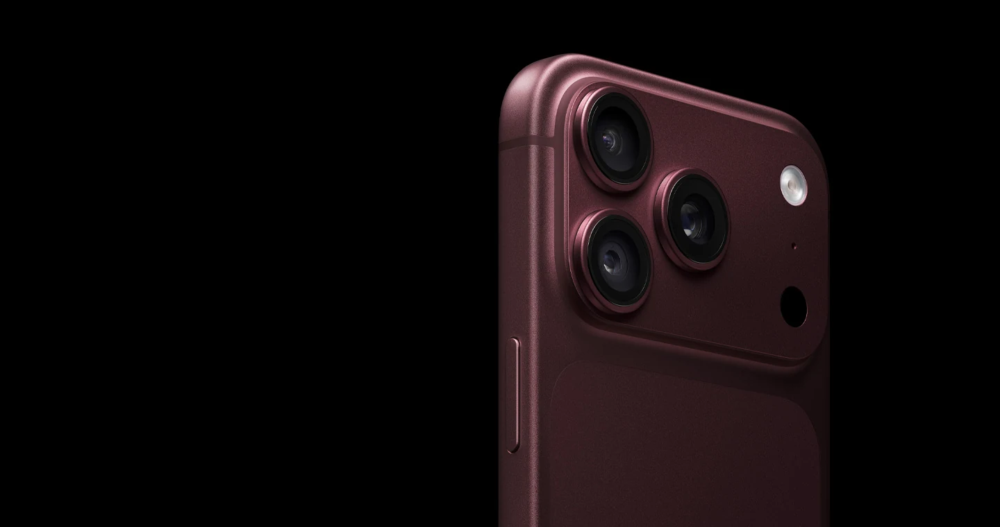

APPLE · IPHONE 18 PRO & PRO MAX
Designed for
the next repair.
A servicing part designed in Siemens NX.
Precision geometry. Considered materials.
Built around the realities of repeated use.

iPhone servicing & mechanical design